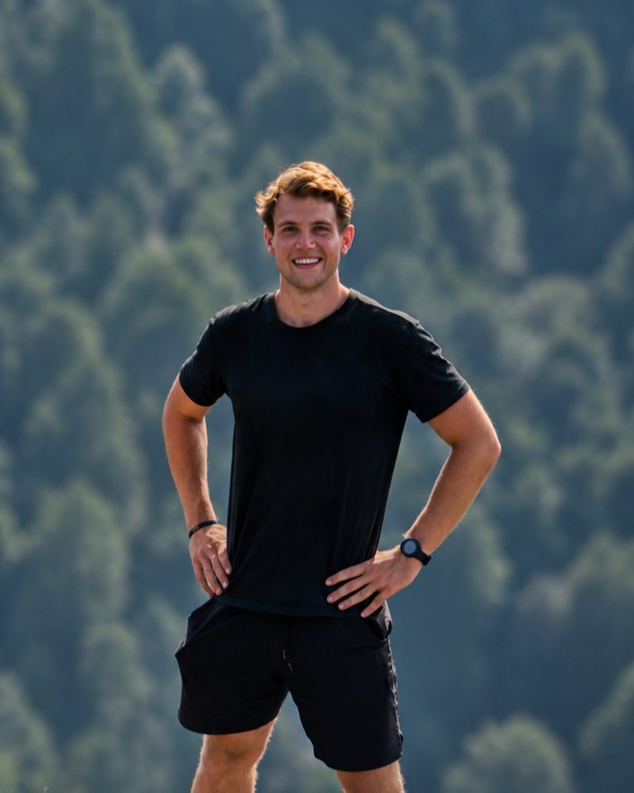
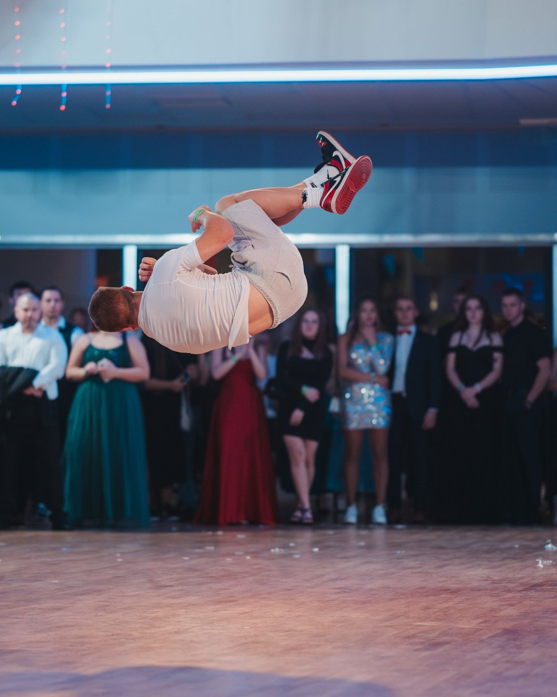
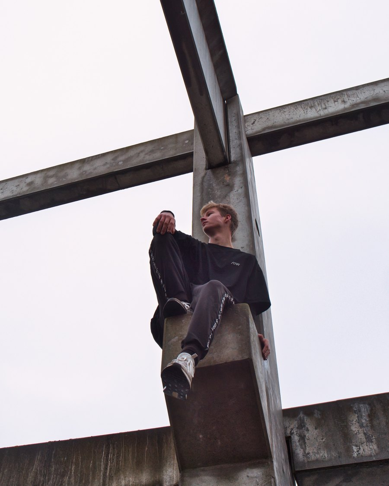
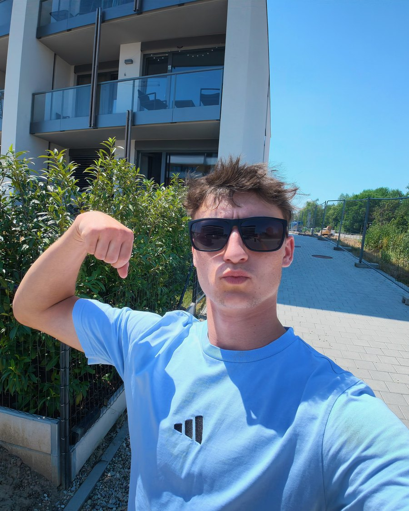
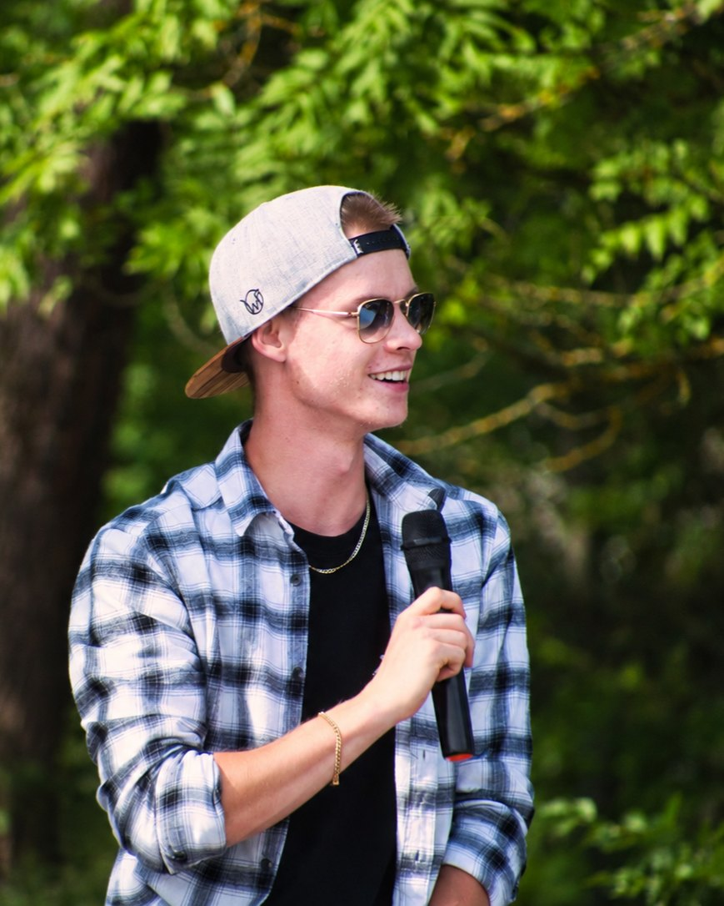

Zkušený tým s trenérskou praxí
Spojuje nás vášeň pro parkour.
Všichni máme dlouholeté zkušenosti s tréninkem, vystupováním i vedením lekcí.


- Licence ČAPkInstruktor III. třídy
- Vzdělání v oboruBc. tělesná výchova
- Praxe od roku 2017kroužky a tábory
- Zkušenosti z akcíplesy, firmy, školy
Parkour jako zážitek pro diváky i účastníky
Máme kvalifikaci
Disponujeme licencí instruktora parkouru i vysokoškolským vzděláním v tělesné výchově a sportu. Dbáme na bezpečnost, využíváme prověřené metody.
Vozíme vlastní vybavení
Překážky i hudbu dovezeme. Rádi případně využijeme i místní vybavení a prostor konání. Prostor si předem prohlédneme.
Přizpůsobíme se
Program pro všechny věkové kategorie, začátečníky i pokročilé. Obsah, tempo, obtížnost i téma ladíme podle domluvy.
S kým se na akci potkáte.

Jako dítě mě inspirovaly filmy s akčními hrdiny. Parkour jsem pak začal trénovat sám venku na hřištích, lavičkách, plotech, v lese nebo doma na staré trampolíně, v tělocvičně jen vzácně. Když jsem se zlepšil, dostal jsem s kamarády možnost vést první parkourový kroužek i letní příměstský tábor.
Během střední školy jsem začal působit na dalších kroužcích, vystoupeních, pobytových táborech a jiných akcích. Později jsem se stal trenérem na letním parkourovém táboře a v rodném městě navrhl parkourové hřiště, což vnímám jako skvělé ohlédnutí za svými začátky.
Dodatečně jsem se kvalifikoval na Mistrovství ČR v parkouru, kvůli zranění jsem se ale soutěže nezúčastnil. Odmaturoval jsem z informačních technologií a vedle parkouru se věnuju digitální tvorbě — fotím a natáčím akce. Okrajově dělám i cheerleading, kde působím jako fotograf, příležitostný soutěžící a trenér.

K parkouru jsem se dostal přes videa, která jsem našel na YouTube. Začínal jsem úplně sám na zahradě, kde jsem trénoval přes palety, a postupně jsem se zlepšoval a sbíral nové zkušenosti.
Od té doby jsem si zkusil docela dost věcí okolo parkouru — trénování dětí, pořádání kurzů, příměstské tábory i další akce.
Zkušenosti rád předávám dál. Baví mě ukazovat ostatním, co všechno se dá v parkouru naučit a dokázat.
Kromě parkouru už nějakou dobu trénuju thajský box a druhý velký koníček jsou pro mě motorky.

Začal jsem s tím, protože jsem vyrůstal na akčních filmech Jackieho Chana, ve kterých předváděl vlastní kaskadérské kousky. Ty mě motivovaly k rychlému a plynulému pohybu, využívání okolního prostředí a improvizaci. Když jsem později zjistil, že se tomuto způsobu pohybu říká parkour, začal jsem se mu věnovat i s kamarády.
Na parkouru mě baví, že nemá pevně daný strop. Každý si ho do určité míry určuje sám podle své odvahy, zkušeností a přístupu k tréninku. Nové prvky se snažím rozdělit na menší, zvládnutelné kroky a postupně si vytvořit bezpečnou cestu od základů až k samotnému triku. Nejvíc mě na tom baví právě překonávání vlastních limitů a hledání vlastního způsobu, jak se zlepšovat.

Parkour jsem obdivoval od dětství, ale sám jsem se k němu dostal až v šestnácti. Předtím jsem vyzkoušel celou řadu sportů, týmových i individuálních, a vždycky mi v nich něco chybělo — hlavně svoboda pohybu a možnost dělat věci po svém, bez toho, aby se pořád hodnotil každý krok.
Od parkouru jsem se postupně dostal i k trickingu. Zkušenosti jsem sbíral jako trenér dětí na pravidelných kroužcích a příměstských táborech a při individuálních trénincích.
Odmaturoval jsem na střední zdravotnické škole a pokračuju dál cestou fyzioterapie. A když zbyde čas, rád si zahraju hry na počítači.

Odmalička jsem byl hodně aktivní dítě a víc než sporty mě přitahoval pohyb sám o sobě. K parkouru jsem se dostal přes trampolínu, kterou jsem dostal k narozeninám od rodičů — sám jsem se na ní začal učit první salta a základní techniky.
Když mi to začalo jít, chtěl jsem se posunout dál a hledal jsem na internetu videa profesionálních parkouristů a akrobatů. Ty pohyby mě ohromily a snil jsem o tom, že jednou budu jako oni. Čím víc jsem se je pokoušel napodobit, tím větší posun jsem u sebe viděl — a tím víc jsem se snažil.
Parkour tehdy ještě nebyl moc populární, ale měl jsem štěstí a potkal pár kluků v mém věku na stejné úrovni. Spojoval nás jeden velký cíl — stát se těmi, ke kterým jsme vzhlíželi. Vznikla z toho komunita, do které se vždycky rád vracím, a myslím, že hlavně o tom parkour je.
Za ta léta jsem si prošel tvrdými tréninky, spoustou naraženin, odřenin a věčně bolavýma nohama. I tak mám parkour opravdu rád a beru ho jako svůj životní styl — nemám nic radši než vyrazit ven s přáteli a pořádně si zatrénovat. No pain, no gain.
Obce, města i firmy, se kterými spolupracujeme
Chcete nás na své akci?
Připravíme parkourový program podle vašich představ.